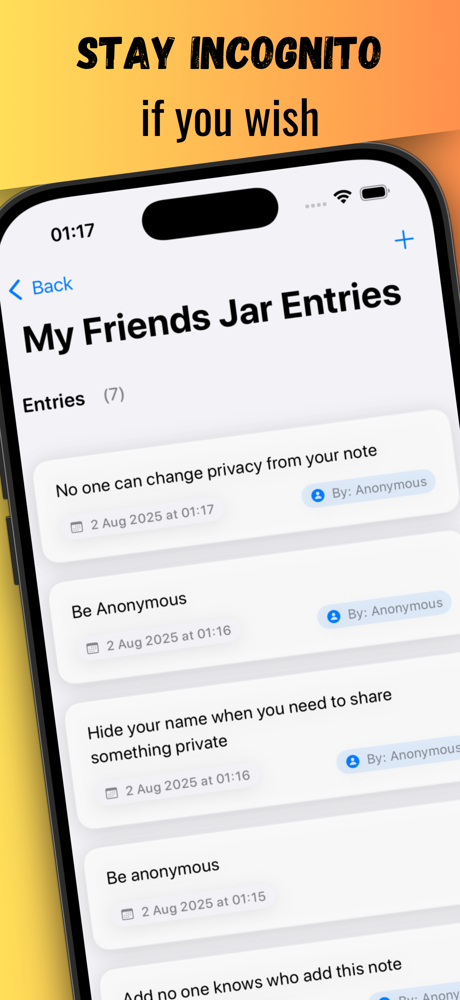
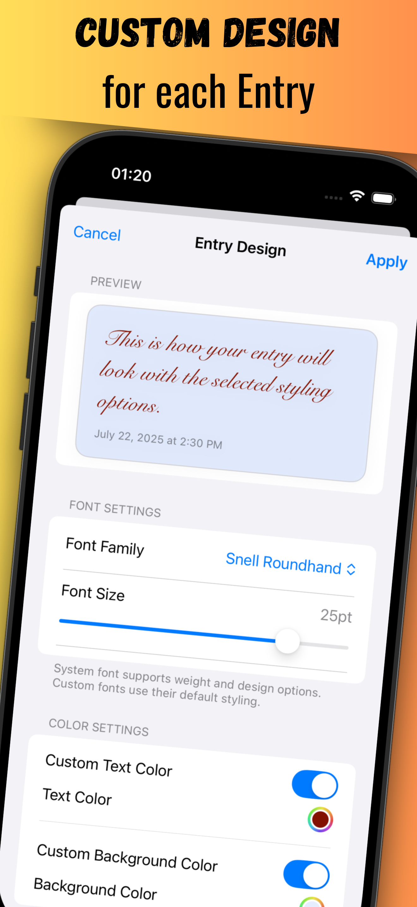
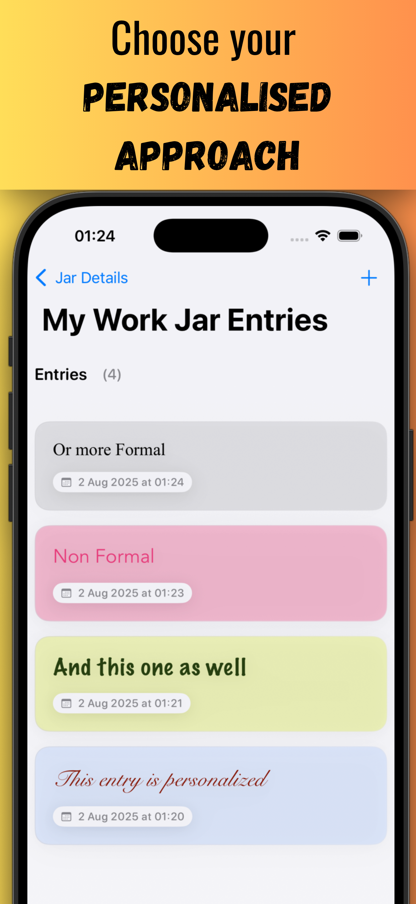
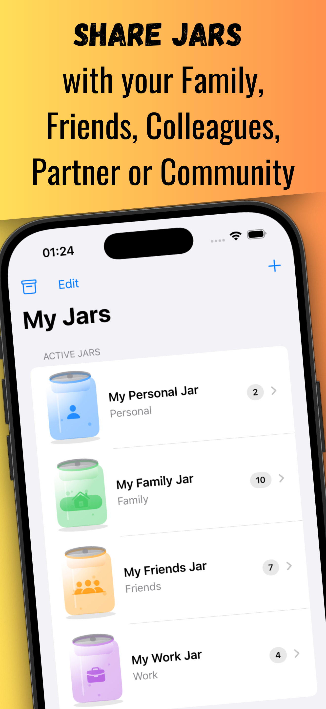
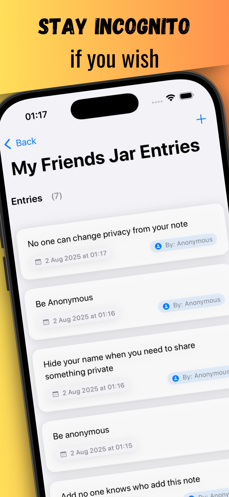
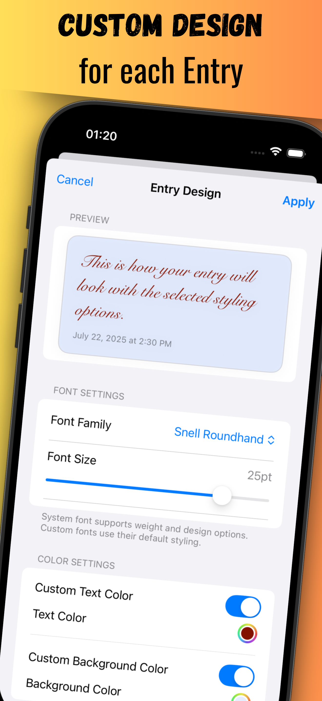
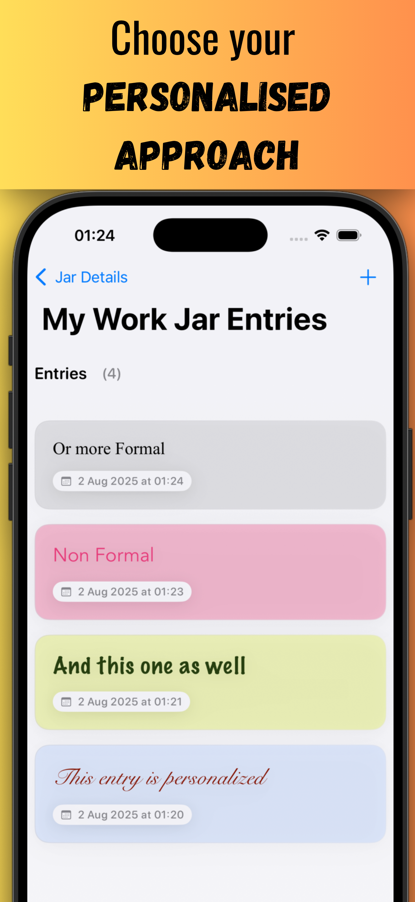
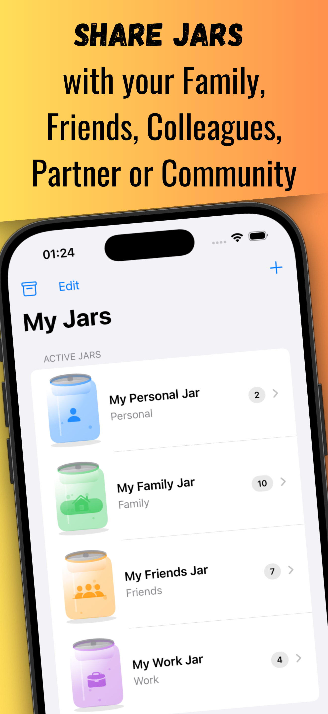

Gratitude Jar - Share Joy
Family and Group Gratitude
App Screenshots
 







A modern SwiftUI gratitude journaling app with Firebase backend and premium subscription features
Overview
Gratitude Jar is a comprehensive iOS application designed to help users cultivate mindfulness and positive thinking through structured gratitude practices. The app combines personal reflection with social connectivity, allowing users to create both private and shared gratitude collections while maintaining a clean, intuitive user experience.
Core Features
🏺 Multiple Jar Types
- Personal Jars: Private gratitude collections for individual reflection
- Shared Jars: Collaborative spaces for families, friends, and groups
- Anonymous Contributions: Safe, judgment-free participation in shared spaces
📝 Rich Entry Creation
- Text-based gratitude entries with rich formatting
- Photo attachments for visual memories
- Timestamp tracking and entry statistics
- Import/export functionality for data portability
👥 Social Collaboration
- Real-time synchronization across devices
- User invitation system for shared jars
- Member management with role-based permissions
- Firebase-powered real-time updates
📊 Analytics & Insights
- Daily, weekly, and monthly entry statistics
- Gratitude journey visualization
- Progress tracking and habit formation metrics
- Export capabilities for therapeutic use
🔔 Smart Notifications
- Customizable gratitude reminders
- Local and push notification support
- Family jar update notifications
- Adaptive scheduling based on user behavior
Technical Architecture
Platform & Framework
- iOS 17.0+ targeting modern iPhone and iPad devices
- Swift 6.0 with latest language features and concurrency
- SwiftUI for declarative user interface design
- SwiftData for local data persistence and offline functionality
Architecture Pattern
- MVVM (Model-View-ViewModel) architecture
- Repository Pattern for data access abstraction
- Coordinator Pattern for navigation flow management
- SOLID principles adherence for maintainable code
Backend Infrastructure
- Firebase Authentication with Apple Sign-In integration
- Cloud Firestore for real-time data synchronization
- Firebase Cloud Messaging for push notifications
- Firebase Analytics for user behavior insights (optional)
- Firebase Crashlytics for crash reporting and debugging
Data Management
- Hybrid Storage Strategy: SwiftData for local/offline, Firebase for cloud sync
- Anonymous User Support: Full functionality without registration
- Automatic Migration: Seamless data transfer when users sign up
- Offline-First Architecture: App functions completely without internet
Premium Features & Monetization
- RevenueCat Integration for subscription management
- Freemium Model with 7-day free trial
- Premium Features: Unlimited jars, advanced analytics, photo uploads, PDF exports
- Apple StoreKit for native subscription handling
Security & Privacy
Data Protection
- Firebase Security Rules for role-based access control
- Local data encryption using iOS Keychain services
- GDPR Compliance with data export and deletion features
- Privacy-First Design with anonymous participation options
Authentication
- Apple Sign-In as primary authentication method
- Google Sign-In as alternative option
- Anonymous Authentication for unregistered users
- Secure token management with automatic refresh
User Experience Features
Accessibility
- VoiceOver Support for vision accessibility
- Dynamic Type support for text scaling
- High Contrast mode compatibility
- Voice Control integration
Internationalization
- Multi-language Support (English, Spanish initially)
- Right-to-Left language support
- Localized strings with proper pluralization
- Cultural date/time formatting
Design System
- Dark/Light Mode automatic adaptation
- iOS Design Guidelines adherence
- Custom Typography hierarchy
- Consistent Color Palette across all screens
- Adaptive UI for iPhone and iPad
Development Workflow
Build Tools
- Xcode 16+ as primary IDE
- Swift Package Manager for dependency management
- Fastlane for automated builds and deployment
- GitHub Actions for CI/CD pipeline
Code Quality
- SwiftLint for code style enforcement
- Unit Testing with XCTest framework
- UI Testing for critical user flows
- Code Coverage reporting and monitoring
App Store Information
- Bundle ID: com.nothing-to-add.gratitude-jar
- Target Audience: Individuals, families, mental health professionals
- Age Rating: 4+ (suitable for all ages)
- Privacy Nutrition Labels: Minimal data collection
- App Store Category: Health & Fitness / Lifestyle
Performance & Scalability
Optimization
- Lazy Loading for large entry collections
- Image Optimization with automatic compression
- Background Sync for seamless user experience
- Memory Management with proper retention cycles
Monitoring
- Firebase Performance Monitoring for app responsiveness
- Crash Analytics for stability tracking
- User Engagement Metrics for feature optimization
- Server Response Time monitoring
Future Roadmap
Version 2.0 Planned Features
- Apple Watch Companion App for quick entry creation
- Siri Shortcuts Integration for voice-activated entries
- Widget Support for home screen gratitude reminders
- Advanced Theming with custom jar visualizations
- Mood Tracking Integration with HealthKit
- AI-Powered Insights for gratitude pattern analysis
Professional Impact
This project demonstrates proficiency in:
- Modern iOS Development with latest SwiftUI patterns
- Firebase Integration and real-time database management
- Subscription Business Models and monetization strategies
- User-Centered Design with accessibility considerations
- Enterprise-Grade Architecture for scalable applications
- Cross-Platform Thinking for future expansion opportunities
The app successfully balances technical complexity with user simplicity, creating a meaningful tool for mental wellness while showcasing advanced iOS development capabilities.
Gratitude Jar represents a comprehensive approach to iOS app development, combining cutting-edge technology with human-centered design to create a genuinely useful application for mental health and social connection.